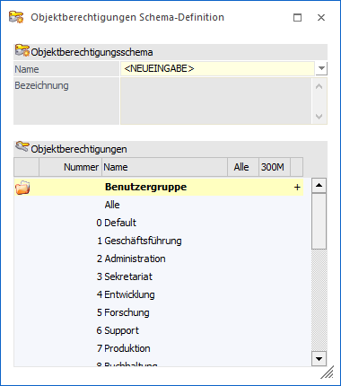
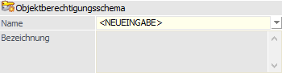
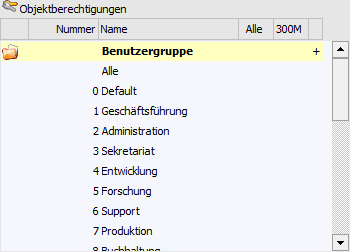
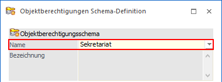
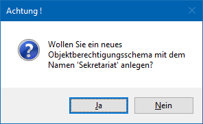
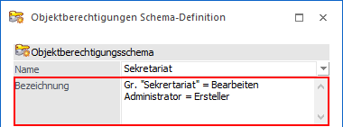
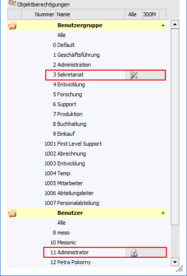
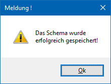
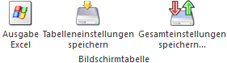

Ein Schema, um Objektberechtigungen einfach und schnell zu vergeben, kann unter
1 WinLine START
1 Optionen
1 Objektberechtigungen
1 Schema-Definition
angelegt werden.
Hinweis 1
Ein angelegtes Objektberechtigungsschema kann in der weiteren Folge Objekten (z.B. WinLine LIST-Listen) zugeordnet werden, wodurch alle lt. Schema berechtigten Benutzer bzw. Benutzergruppen Zugriff auf das Objekt besitzen. Die Zuordnung kann hierbei über die folgenden Wege vorgenommen werden:
ü Programm
"Objektberechtigungen"
Handelt es sich bei dem Benutzer um einen
Volladministrator oder eine Benutzer mit dem Teiladministrationsrecht
"Berechtigungsvergabe" so können Schemen im Programm "Objektberechtigungen"
(WinLine START - Optionen - Objektberechtigungen - Objektberechtigungen)
zugeordnet werden (für einzelne Objekte oder auch für mehrere Objekte auf
einmal).
ü Button "Berechtigungen"
Legt
ein Benutzer ein neues Objekt an oder besitzt auf dieses das Recht "(5)
Ersteller", so kann dieser das Schema im Objektberechtigungsfenster des Objektes
(aufzurufen über den Button "Berechtigungen") auswählen und anwenden.
Hinweis 2
Bei einer Änderung der Berechtigungen in einem bestehenden Schema wirkt sich dieses unmittelbar auf alle Objekte aus, bei denen das Schema zugewiesen wurde.

Objektberechtigungsschema

Ø Name
Hier kann ein bereits vorhandenes Schema per Auswahlliste geladen oder ein neues Schema angelegt werden.
Um ein neues Schema anzulegen, muss <NEUEINGABE> gewählt und mit dem Namen (maximal 25 Zeichen) des neu anzulegenden Schemas überschrieben werden.
Ø Bezeichnung
Wurde ein vorhandenes Schema geladen, wird unter "Bezeichnung" die eingetragene nähere Beschreibung des Schemas angezeigt. Wird ein Schema neu angelegt, so kann eine Beschreibung (maximal 100 Zeichen) hinterlegt werden.
Tabelle "Objektberechtigungen"

In der Tabelle werden grundsätzlich alle angelegen Benutzergruppen und Benutzer aufgelistet. All jenen Elementen können dann die Vorbelegungen für die Berechtigungen zugewiesen werden. Die Berechtigungsvergabe kann über die rechte Maustaste (Auswahl der gewünschten Berechtigungsstufe aus dem Kontextmenü) oder durch Eingabe der Berechtigungsnummer via Tastatur erfolgen. Zur Verfügung stehen die folgenden Berechtigungsstufen:
ü (0) Keine Berechtigung
ü (1) Lesen
ü (2) Bearbeiten
ü (3) Delegieren
ü (4) Löschen
ü (5) Ersteller
Achtung
Das Recht "(5) Ersteller" muss immer zugeordnet werden!
Beispiel
Alle Benutzer der Benutzergruppe "Sekretariat" sollen die Berechtigung "(2) Bearbeiten" erhalten und der Administrator das Recht "(5) Ersteller".
ü Schema anlegen
Um ein neues
Schema anzulegen muss <NEUEINGABE> aus der Auswahlliste "Name" gewählt und
mit dem gewünschten Namen (hier "Sekretariat") überschreiben werden.


ü Beschreibung vergeben
Danach
kann eine Bezeichnung vergeben werden, um die Funktion des Schemas genauer zu
beschreiben.

ü Berechtigungsvergabe
In der
Tabelle werden dann die gewünschten Objektberechtigungen, welche bei Anwendung
dieses Schemas wirken sollen, hinterlegt (per rechter Maustaste und Kontextmenü
oder per Eingabe der Berechtigungsnummer via Tastatur).

ü Speichern des Schemas
Durch
Anwahl des Buttons "Ok" oder der Taste F5 erfolgt die Speicherung und das neu
angelegte Schema kann für die Berechtigungsvergabe herangezogen werden. Eine
Meldung zeigt, dass das Schema erfolgreich gespeichert wurde.

Tabellenbuttons

Ø Ausgabe Excel
Durch Anwahl des Buttons "Ausgabe Excel" wird der Inhalt der Tabelle an Microsoft Excel übergeben.
Ø Tabelleneinstellungen speichern
Die Spalten einer Tabelle können grundsätzlich an beliebige Positionen verschoben, bzw. in der Breite entsprechend angepasst werden. Durch Anwahl des Buttons "Tabelleneinstellungen speichern" werden die Einstellungen benutzerspezifisch gespeichert und bei dem nächsten Aufruf des Programmpunktes wieder vorgeschlagen.
Ø Gesamteinstellungen speichern
Im Gegensatz zu "Tabelleneinstellungen speichern" können mit "Gesamteinstellungen speichern" mehrere Tabellenaufbauten gespeichert und nach Wunsch geladen werden. Zusätzlich werden Sonderfunktionen der Tabelle (z.B. "Spalte gruppieren") ebenfalls bei der Speicherung bedacht.
Buttons
Ø OK
Mit Hilfe des Buttons "Ok" bzw. der Taste F5 kann das Schema gespeichert werden.
Hinweis
Wird ein bereits bestehendes Schema abgeändert, so werden die Objektberechtigungen jener Objekte, bei denen dieses Schema bereits hinterlegt ist, entsprechend abgeändert!
Ø Ende
Mit Hilfe des Buttons "Ende" bzw. der Taste ESC wird das Fenster geschlossen.
Ø Löschen
Durch Anwahl des Buttons "Löschen" kann ein bestehendes Objektberechtigungsschema gelöscht werden. Wird dieses bereits bei einem Objekt verwendet, so kann das Schema nicht gelöscht werden und es erscheint eine Meldung, welche darauf hinweist.